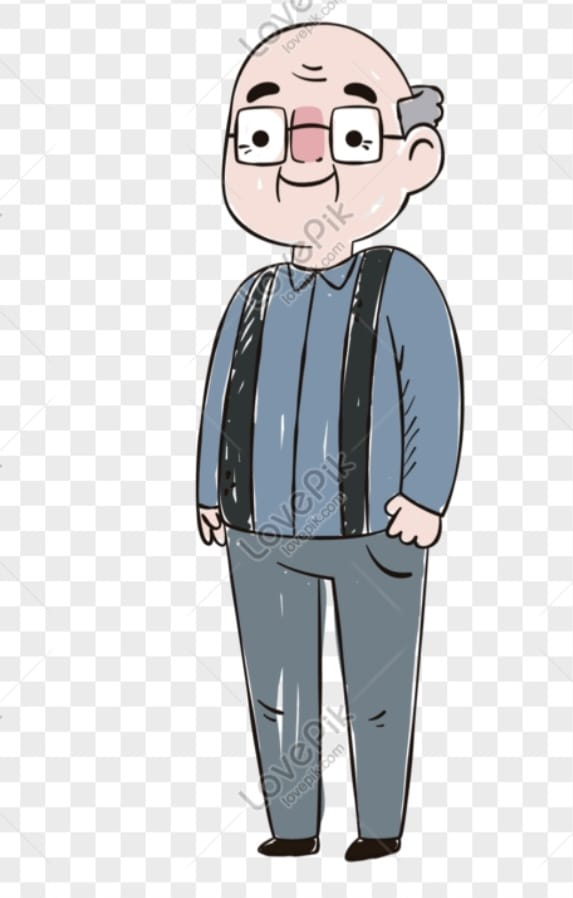

תעודת זהות סבא מיכאל נסימי

שם: מיכאל נסימי
שמות ההורים: ז"ל אברהם ז"ל שרה
שאלות ותשובות
1. מהו מקור שם המשפחה שלנו?
שם המשפחה שלנו מגיע מהשורשים הספרדיים, שם שימש כסמל למסורת ומורשת.
2. כיצד נראתה ילדותך?
הילדות שלי הייתה מלאה במשחקים ברחובות, חברים והרבה צחוק.
3. כיצד חגגתם חגים במשפחה?
בחגים היינו מתאספים כל המשפחה, מבשלים יחד ושרים שירים מסורתיים.
4. איך הכרת את סבתא?
פגשתי את סבתא במסיבת חברים משותפים, ומיד ידעתי שהיא האחת.
5. מה היה המקצוע הראשון שלך?
עבדתי כנער שליח במכולת השכונתית ולמדתי את חשיבות העבודה הקשה.
6. מהם השינויים הכי גדולים שראית בעולם?
ראיתי את המעבר מטלפונים חוגה לסמארטפונים, ואת ההתקדמות הטכנולוגית העצומה.
7. מהם המאכלים האהובים עליך מהילדות?
אני אוהב במיוחד את הקוסקוס של סבתא ואת תבשילי החמין של שבת.
8. מהי החוויה הכי מרגשת שעברת?
החוויה המרגשת ביותר שלי הייתה הולדת ילדיי, רגעים של שמחה אינסופית.
9. מהם הערכים שהכי חשובים לך?
כבוד, משפחתיות ואהבת הזולת הם הערכים שהנחו אותי לאורך חיי.
10. איזו עצה היית נותן לדורות הבאים?
אל תפסיקו לחלום, תעבדו קשה, תכבדו את המשפחה ותהיו נאמנים לעצמכם.